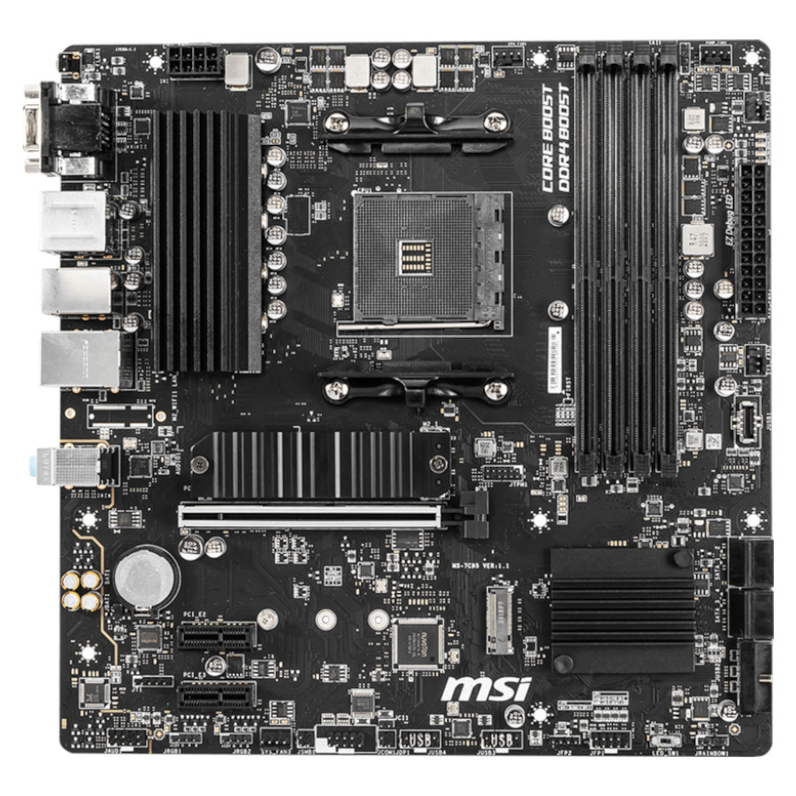
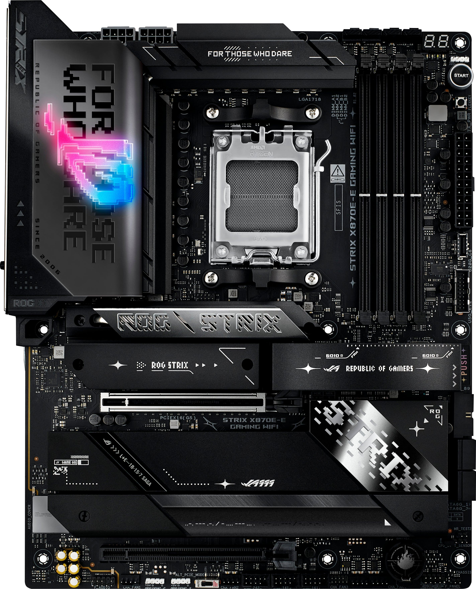
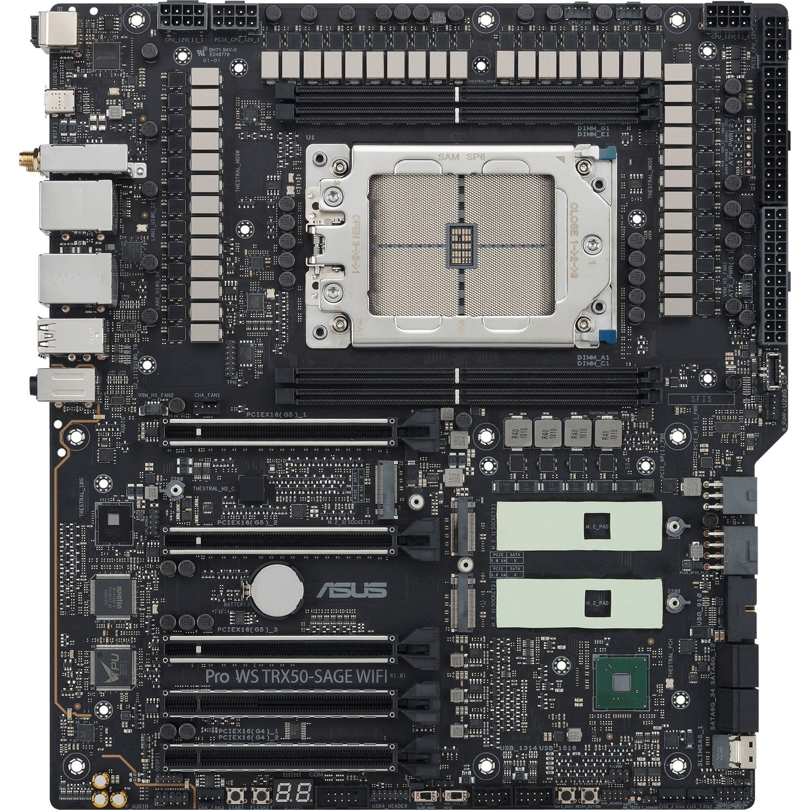
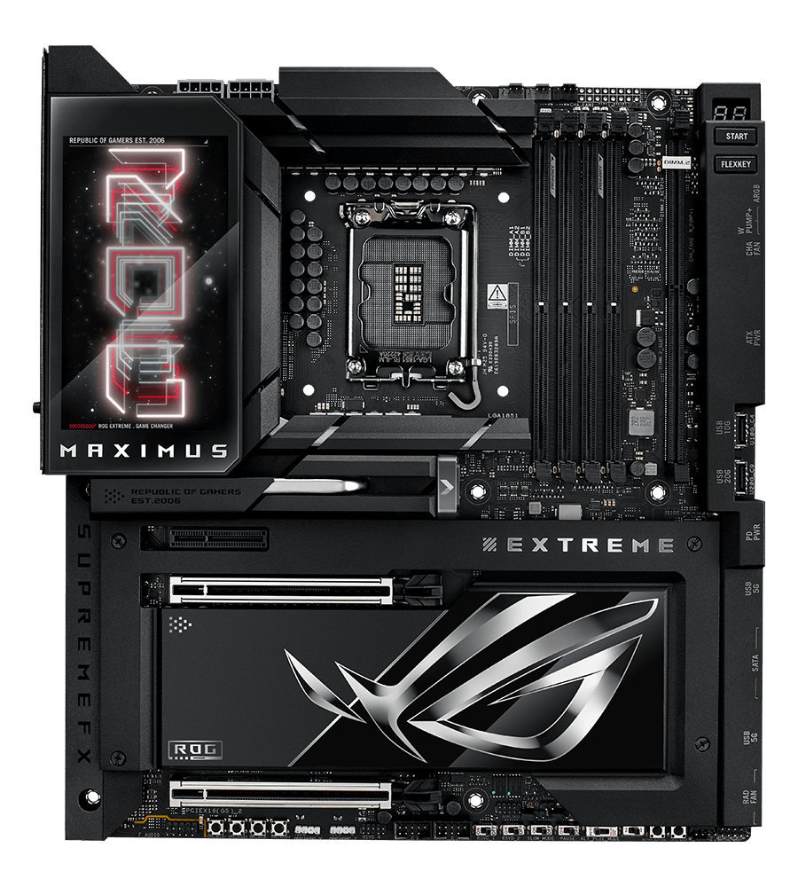

MSI B550M PRO-VDH WIFI (Gama baja - 130.95 €): Esquema modesto de 4+2 fases digitales con Core Boost y almohadillas térmicas de 7W/mK. Ideal para procesadores de 6 núcleos; bajo cargas de trabajo pesadas continuadas se calienta significativamente.
ASUS ROG STRIX X870E-E GAMING WIFI (Gama media - 489.95 €): Sistema de alimentación de 18+2+2 fases con componentes DrMOS de 110A y disipadores metálicos con tubos de calor para soportar overclocking sostenido en socket AM5.
ASUS Pro WS TRX50-SAGE WIFI (Gama alta - 889.96 €): Estructura industrial extrema de 36 etapas de potencia con refrigeración activa (ventiladores ocultos) para alimentar chips AMD Threadripper PRO de hasta 96 núcleos y más de 600W de consumo 24/7.
ASUS ROG MAXIMUS Z890 EXTREME (Estado del arte - 2.604,65 €): Sistema de entrega de energía tope de gama para el nuevo socket Intel LGA 1851 con procesadores Intel Core Ultra (Serie 2), dotado de conectores duales EPS de 8 pines, conector PCIe dedicado de 8 pines y bloques de disipación masivos con heatpipes integrados para exprimir el silicio sin límite térmico.
El VRM es como un equipo de camareros que lleva agua (energía) de un grifo gigante (la fuente de alimentación) a un cliente muy exigente (el procesador). Si tienes 4 camareros (gama baja) y el cliente pide agua a un ritmo normal, bien. Pero si el cliente pide muchísima agua de golpe, esos 4 camareros se agotarán (se calientan). Cuantos más camareros tengas y mejores sean sus bandejas, el cliente nunca se queda sin agua y los camareros ni sudan.
Imagina meterle un motor de Ferrari a un utilitario sin cambiarle el chasis. La placa de 130€ encenderá un procesador tope de gama, pero al jugar o renderizar un vídeo pesado, bajará drásticamente su velocidad para no freírse por falta de potencia eléctrica. Con placas como la Z890 EXTREME o la TRX50, pisas el acelerador a fondo sin límite de energía.
MSI B550M PRO-VDH WIFI (Gama baja - 130.95 €): Cuenta con 1 ranura PCIe 4.0/3.0 x16 y 2 ranuras PCIe 3.0 x1. En almacenamiento ofrece 1 M.2 PCIe 4.0 x4 y 1 M.2 PCIe 3.0 x4 con 4 puertos SATA III.
ASUS ROG STRIX X870E-E GAMING WIFI (Gama media - 489.95 €): 2 ranuras PCIe x16 (1 Gen 5 y 1 Gen 4) y 5 ranuras M.2 (3 PCIe 5.0 y 2 PCIe 4.0), más 4 puertos SATA III con soporte RAID 0/1/5/10.
ASUS Pro WS TRX50-SAGE WIFI (Gama alta - 889.96 €): Soporte masivo de líneas gracias al procesador Threadripper: 3 ranuras PCIe 5.0 x16 y 2 ranuras PCIe 4.0 x16 dedicadas. Permite montar hasta 4 GPUs profesionales simultáneamente y hasta 7 unidades de disco (M.2 NVMe, SlimSAS y SATA III).
ASUS ROG MAXIMUS Z890 EXTREME (Estado del arte - 2.604,65 €): Cúspide de expansión doméstica: 2 ranuras PCIe 5.0 x16 blindadas, 1 ranura PCIe 4.0 x4 y nada menos que 6 ranuras M.2 (combinando soporte PCIe 5.0 y 4.0 con disipación dedicada) junto a 4 puertos SATA III y RAID 0/1/5/10.
Las líneas PCIe son los carriles de una autopista. La gráfica es un camión ancho que ocupa 16 carriles y cada disco SSD rápido ocupa 4 carriles. En placas domésticas hay carriles contados; si metes muchos camiones y furgonetas a la vez, se crean atascos. Una placa con 6 slots M.2 y dos PCIe 5.0 x16 es como tener autopistas de varios pisos para que nada choque.
En la placa Estado del Arte puedes conectar dos tarjetas gráficas PCIe 5.0 y hasta seis unidades SSD ultrarrápidas de última generación simultáneamente para crear contenido en 8K, desarrollo de IA o jugar al máximo sin que ningún disco se quede sin carril de datos.
MSI B550M PRO-VDH WIFI (Gama baja - 130.95 €): 4 ranuras DIMM de memoria DDR4 en Dual-Channel, hasta 128 GB de capacidad y soporte para overclocking hasta DDR4-4400 MHz.
ASUS ROG STRIX X870E-E GAMING WIFI (Gama media - 489.95 €): 4 ranuras DIMM DDR5 en Dual-Channel con soporte para hasta 192 GB a velocidades de hasta 8400 MHz (OC).
ASUS Pro WS TRX50-SAGE WIFI (Gama alta - 889.96 €): Arquitectura profesional Quad-Channel con 4 ranuras para memoria DDR5 ECC R-DIMM (módulos registrados con corrección de errores) y una capacidad de hasta 1 TB (1024 GB).
ASUS ROG MAXIMUS Z890 EXTREME (Estado del arte - 2.604,65 €): 4 ranuras DIMM DDR5 en Dual-Channel con soporte para hasta 256 GB, batiendo récords de velocidad al alcanzar hasta 9200 MT/s en overclocking gracias a las tecnologías de señal NitroPath DRAM y perfiles AEMP III.
Dual-Channel son dos carreteras de doble sentido entre el almacén (RAM) y la fábrica (CPU). Quad-Channel son cuatro carreteras directas (mueve el doble de datos brutos). Por otro lado, la velocidad en MT/s indica lo rápido que circulan los camiones por esa carretera: 9200 MT/s es la velocidad más alta disponible hoy en día.
Al cargar niveles en videojuegos exigentes o al descomprimir archivos gigantescos, tener memoria a 9200 MT/s elimina microtirones y exprime cada fotograma por segundo que la tarjeta gráfica es capaz de generar.
MSI B550M PRO-VDH WIFI (Gama baja - 130.95 €): Formato compacto Micro-ATX con PCB reforzado con 2 oz de cobre espesado.
ASUS ROG STRIX X870E-E GAMING WIFI (Gama media - 489.95 €): Formato estándar ATX (305 x 244 mm) con PCB de 8 capas de cobre denso, disipadores metálicos gruesos en VRM y cubiertas protectoras para todas las unidades M.2 con un peso total de 2060 g.
ASUS Pro WS TRX50-SAGE WIFI (Gama alta - 889.96 €): Formato extendido SSI CEB (305 x 280 mm) de grado estación de trabajo, peso masivo de 2,53 kg con circuito de 10-12 capas de cobre de alta densidad y ventilación activa en disipadores.
ASUS ROG MAXIMUS Z890 EXTREME (Estado del arte - 2.604,65 €): Formato colosal Extended ATX (E-ATX de 305 x 277 mm), construido con componentes de máxima calidad de blindaje, disipadores de bloque completo con heatpipes para M.2 Gen5 y pantalla integrada para diagnóstico y estética.
Una placa base es como un edificio con varios pisos donde corren cables de cobre microscópicos. Cuantos más pisos (capas) tenga, más puedes distanciar los cables para que la electricidad de unos no cree interferencias en los otros, permitiendo frecuencias récord.
Una placa de 4 capas es como un apartamento de paredes de papel: si el vecino pone la música alta, escuchas el ruido (interferencias). Una placa E-ATX como la Z890 EXTREME es una mansión de concreto blindado donde las señales viajan a 9200 MT/s sin que una sola pista moleste a la de al lado.
MSI B550M PRO-VDH WIFI (Gama baja - 130.95 €): Red cableada Gigabit LAN (Realtek RTL8111HN), módulo inalámbrico Intel Wireless-AC 3168 con Wi-Fi 5 y Bluetooth 4.2. Puertos USB traseros estándar y audio HD 7.1 con Audio Boost.
ASUS ROG STRIX X870E-E GAMING WIFI (Gama media - 489.95 €): Red cableada Ethernet 5 GbE, Wi-Fi 7 (802.11be), Bluetooth 5.4, 2 puertos USB4 Tipo-C de 40 Gbps, audio premium SupremeFX con Realtek ALC4080 y botones físicos Clear CMOS / BIOS Flashback.
ASUS Pro WS TRX50-SAGE WIFI (Gama alta - 889.96 €): Doble controladora de red LAN (10 GbE + 2.5 GbE Intel I226-LM), Wi-Fi 7, Bluetooth 5.4, múltiples puertos USB 3.2 Gen 2x2 Tipo-C y compatibilidad total con tarjetas y software ASUS IPMI para monitorización remota a nivel de servidor.
ASUS ROG MAXIMUS Z890 EXTREME (Estado del arte - 2.604,65 €): Despliegue de gala sin rival: doble puerto Ethernet (10 GbE + 2.5 GbE), Wi-Fi 7, Bluetooth 5.4, 2 puertos Thunderbolt 5 USB-C ultra rápidos (capaces de transferir a hasta 80-120 Gbps), audio SupremeFX 7.1 con codec Realtek ALC4082 y dual BIOS UEFI AMI de 256 Mb.
Thunderbolt 5 y la red 10 GbE multiplican por varias veces la velocidad de los puertos USB normales. Te permiten transferir discos enteros de datos a servidores locales o conectar múltiples pantallas de alta resolución por un solo cable sin que el ordenador se inmute.
Con los puertos Thunderbolt 5 de la placa Estado del Arte puedes conectar cabinas de discos externos ultrarrápidas y transferir películas enteras sin comprimir o bibliotecas gigantescas de juegos en cuestión de 2 o 3 segundos.
ROJO Básico / Limitado / Ausente: Cumple con lo mínimo vital, pero puede quedarse corto para usos intensivos, o directamente es una tecnología que la placa no incluye.
AMARILLO Estándar / Bueno: Es el nivel medio actual. Perfecto para la gran mayoría de usuarios, aunque no es el tope absoluto del mercado.
VERDE Superior / Top: Tecnología punta, calidad entusiasta o rendimiento extremo de grado industrial. Es lo mejor que puedes comprar en su categoría.
| Componente / Característica | MSI B550M (Gama Baja - 130.95€) | ASUS ROG X870E-E (Gama Media - 489.95€) | ASUS TRX50 (Gama Alta - 889.96€) | ASUS ROG Z890 EXTREME (Estado del Arte - 2.604,65€) |
|---|---|---|---|---|
| Zócalo (Socket) | AMD Socket AM4 | AMD Socket AM5 | AMD Socket sTR5 | Intel LGA 1851 (Core Ultra Serie 2) |
| Chipset | AMD B550 | AMD X870E | AMD TRX50 | Intel Z890 |
| Formato (Factor de forma) | Micro-ATX | ATX (305 x 244 mm) | SSI CEB (305 x 280 mm) | Extended ATX / E-ATX (305 x 277 mm) |
| Fases de poder y entrega de energía | 4+2 fases digitales | 18+2+2 fases (110A) | 36 etapas industriales (activa) | Fases entusiastas (Dual 8 pines EPS + 8 pines PCIe) |
| Refrigeración activa integrada | No (pasiva) | No (pasiva masiva) | Sí (ventiladores VRM/chipset) | No (disipación masiva pasiva con heatpipes) |
| Tipo de memoria RAM | DDR4 | DDR5 | DDR5 ECC R-DIMM | DDR5 (Non-ECC, unbuffered) |
| Canales de RAM | 2 (Dual-Channel) | 2 (Dual-Channel) | 4 (Quad-Channel) | 2 (Dual-Channel) |
| Capacidad máxima de RAM | 128 GB (4 DIMMs) | 192 GB (4 DIMMs) | 1 TB / 1024 GB (4 DIMMs) | 256 GB (4 DIMMs) |
| Velocidad máxima RAM (OC) | DDR4-4400 MHz | DDR5-8400 MHz | DDR5 R-DIMM estándar | DDR5-9200 MT/s (NitroPath DRAM / AEMP III) |
| Ranuras de expansión PCIe | 1x PCIe 4.0 x16 + 2x PCIe 3.0 x1 | 2x PCIe x16 (1x Gen5, 1x Gen4) | 3x PCIe 5.0 x16 + 2x PCIe 4.0 x16 | 2x PCIe 5.0 x16 + 1x PCIe 4.0 x4 |
| Soporte Multi-GPU | No | No recomendable | Sí (hasta 4 gráficas dedicadas) | Sí (2x PCIe 5.0 x16 compatibles) |
| Ranuras M.2 Almacenamiento | 2 (1x Gen4 x4 + 1x Gen3 x4) | 5 (3x PCIe 5.0 + 2x PCIe 4.0) | 3 (PCIe NVMe) + SlimSAS | 6 (combinación PCIe 5.0 y 4.0) |
| Puertos SATA III | 4 puertos | 4 puertos | Hasta 7 unidades (SATA+SAS) | 4 puertos (RAID 0/1/5/10) |
| Conexión Red (Ethernet) | 1 Gbps (Realtek RTL8111HN) | 5 Gbps Ethernet | Dual: 10 GbE + 2.5 GbE (Intel) | Dual: 10 GbE + 2.5 GbE |
| Conectividad Inalámbrica | Wi-Fi 5 + Bluetooth 4.2 | Wi-Fi 7 + Bluetooth 5.4 | Wi-Fi 7 + Bluetooth 5.4 | Wi-Fi 7 + Bluetooth 5.4 |
| Conexión de Transferencia Rápida | No | 2x USB4 Tipo-C (40 Gbps) | USB 3.2 Gen 2x2 (20 Gbps) | 2x Thunderbolt 5 USB-C (80-120 Gbps) |
| Sistema de Audio | Realtek 7.1 HD Audio Boost | Realtek ALC4080 SupremeFX 7.1 | Realtek ALC1220P HD | SupremeFX 7.1 (Realtek ALC4082) |
| Gestión Remota / Servidor (IPMI) | No | No | Sí (ASUS IPMI Hardware/Soft) | No |
| Herramientas Físicas / BIOS | No | Clear CMOS + BIOS Flashback | Botones de testeo en placa | Dual BIOS (2x 256 Mb) + AI Overclocking |
La cuna donde encaja el procesador con sus pines. Como la cerradura de una puerta: una llave moderna no entra en un zócalo viejo bajo ningún concepto.
Módulo Regulador de Voltaje. Es el transformador de la placa. Baja los 12V brutos de la fuente a la energía limpia (1.1v - 1.3v) que necesita el procesador sin quemarlo.
La placa física (suelo verde/negro). No es un plástico plano, sino un "milhojas" prensado con pistas de cobre por dentro. Más capas = menos interferencias.
Los carriles de la autopista por donde viajan los datos entre el procesador, la gráfica y los discos. Se miden en anchura (x1, x4, x16).
Formato de los discos duros modernos. Parecen una barra de chicle y se atornillan directo a la placa base, ahorrando cables y volando en velocidad.
Chip extra en memorias RAM profesionales. Actúa como corrector ortográfico al vuelo: si la temperatura cambia un 0 por un 1 en tus datos, lo corrige antes de que el PC se cuelgue.
Las tuberías de memoria. Dual-Channel usa dos carriles paralelos (típico en casa). Quad-Channel usa cuatro, moviendo el doble de gigabytes por segundo a la vez.
El estándar de transferencia por cable más rápido del mercado. Alcanza entre 80 y 120 Gbps por un solo cable USB-C, duplicando o triplicando a USB4.
Microordenador independiente integrado en placas profesionales. Te permite encender, apagar o formatear el PC por internet, aunque esté a 2000 km y totalmente colgado.
Botón o puente metálico que borra la memoria de la BIOS, devolviendo la placa a los ajustes de fábrica si has tocado algo y el PC no enciende.
El "director de tráfico" de la placa base (como el B550, X870E o Z890). Controla las conexiones secundarias para quitarle trabajo al procesador principal.
El primer programa que se carga al encender el PC antes del sistema operativo. Revisa que todos los componentes estén sanos y te permite ajustar frecuencias.
PCIe 3.0 ~1 GB/s por carril. Es el estándar de hace una década.
PCIe 4.0 ~2 GB/s por carril. Estándar de la mayoría de PCs de hace un par de años (Gama baja).
PCIe 5.0 ~4 GB/s por carril. Lo más puntero (Gamas superiores).
DDR4 Trabaja entre 2400 y 3600 MHz. La placa base regula su energía.
DDR5 Arranca en 4800 MHz y puede superar los 9200 MT/s en la gama entusiasta. Llevan su propio regulador en el módulo.
Micro-ATX Formato compacto y cuadrado. Ideal para cajas pequeñas. (Gama baja).
ATX El tamaño estándar equilibrado para torres de escritorio normales. (Gama media).
E-ATX / SSI CEB Formatos gigantes para placas con disipación extrema y múltiples ranuras. (Gama alta y estado del arte).
WiFi 5 Banda de 5 GHz. Se satura rápidamente con múltiples conexiones simultáneas. (Gama baja).
WiFi 6 / 6E Incorpora la banda de 6 GHz con velocidades de hasta 9.6 Gbps y mejor gestión de red.
WiFi 7 Máxima velocidad actual (46 Gbps teóricos) con tecnología de enlace múltiple (MLO).
BT 4.2 Conexión estándar básica con mayor latencia.
BT 5.1 Mayor alcance y mejor localización de señal.
BT 5.4 Consumo ultra bajo, respuesta inmediata y estabilidad con varios periféricos a la vez.
1 Gbps Transferencia real de unos 115-120 MB/s. Límite habitual en placas básicas.
2.5 Gbps Alcanza 280-300 MB/s para aprovechar conexiones de fibra de alta velocidad.
5 Gbps Supera los 600 MB/s para mover datos pesados en redes locales.
10 Gbps Supera los 1.100 MB/s de lectura/escritura a través de la red local. (Gama alta y estado del arte).
USB 2.0 (Negro) 480 Mbps (~40 MB/s), indicado para periféricos como teclado y ratón.
USB 3.2 Gen 1 (Azul) 5 Gbps (~500 MB/s), estándar para pendrives convencionales.
USB4 (Tipo-C) 40 Gbps para discos NVMe externos y monitores.
Thunderbolt 5 80 a 120 Gbps con transferencia extrema y suministro de corriente de alta potencia. (Estado del arte).
Una placa base no es universal: está diseñada exclusivamente para una marca de procesador y para una generación concreta de zócalo (socket). No puedes instalar un procesador AMD en una placa Intel ni viceversa.
AMD (Socket AM4 / AM5 / sTR5): Su gran ventaja competitiva es la longevidad. AMD suele mantener el mismo zócalo durante varias generaciones de procesadores, lo que permite al usuario actualizar su procesador en el futuro sin tener que comprar una placa base nueva.
Intel (Socket LGA 1700 / LGA 1851): Tradicionalmente renueva el formato físico del zócalo cada dos generaciones. Suele liderar en la integración de puertos de altísima velocidad como Thunderbolt 5 y soporte de memorias a frecuencias extremas en el mercado doméstico.
En el mercado de ordenadores compatibles de consumo domina la arquitectura x86 compartida por Intel y AMD. Fuera de este ecosistema encontramos a Apple (con sus chips Apple Silicon M-Series basados en arquitectura ARM), donde la placa es 100% propietaria e integra CPU, GPU y RAM en una misma pieza sin posibilidad de compra individual de componentes; y a Qualcomm con sus procesadores Snapdragon X para portátiles ultraligeros con Windows.
En sobremesa, el procesador (socket), la tarjeta gráfica (ranura PCIe) y la memoria RAM son componentes independientes que se pueden sustituir. En un portátil, la CPU y la GPU van soldadas a la placa mediante bolas de estaño (formato BGA), impidiendo su actualización.
Las placas de sobremesa siguen medidas estándar internacionales (ATX, Micro-ATX, E-ATX) que encajan en cualquier caja del mercado. Las placas de portátil se fabrican a medida para un chasis concreto con formas irregulares; si se rompe, solo se puede sustituir por un recambio idéntico del mismo fabricante.
Una placa de sobremesa puede montar bloques de cobre y aluminio de varios kilogramos y alimentar componentes de más de 300W-600W. Una placa de portátil está confinada a grosores de milímetros, limitando el consumo de los componentes a rangos de 15W a 120W para no sobrecalentarse.